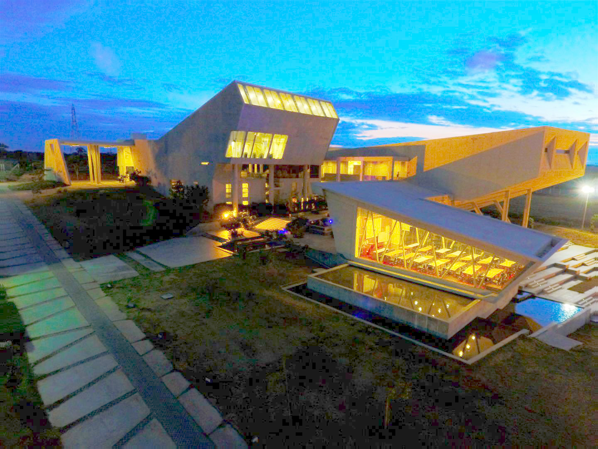
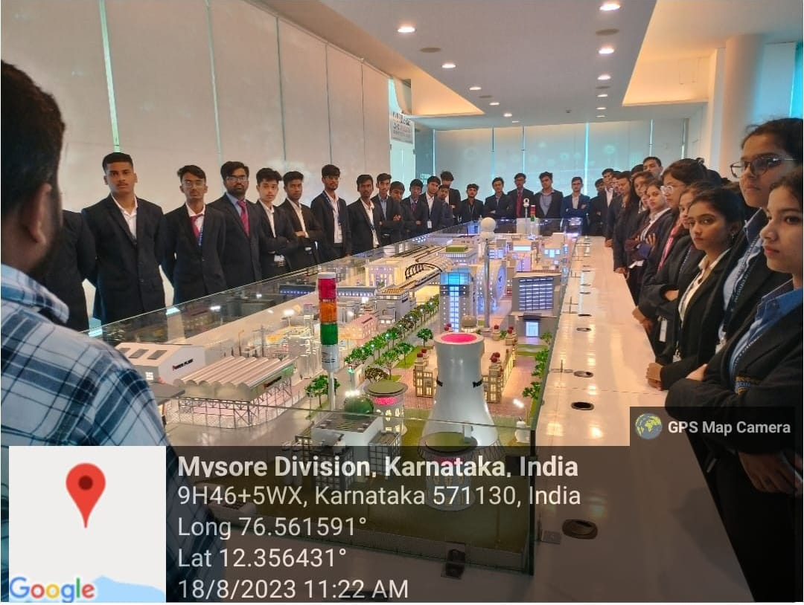
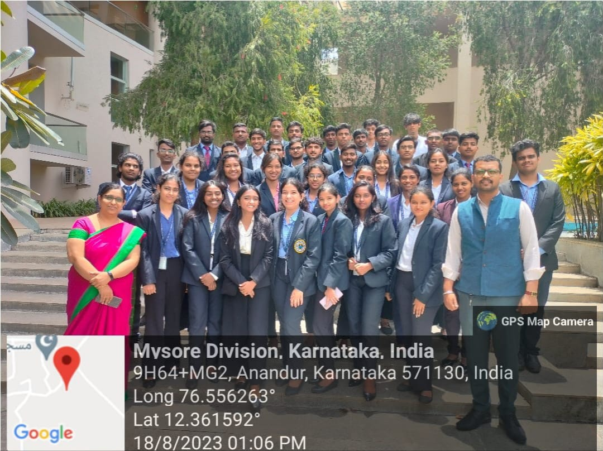

Industrial visit has its own importance in a career of a student who is pursuing a degree. It is considered as a part of college curriculum and objectives of industrial visit is to provide students an insight regarding internal working of companies.
The Students at BMSCCM visited varied organisations to see how they function & understand the practical aspect of corporate life. The students enjoy the trip as they visit & interact with different companies and organisations.The industries students visited by students are MYRA School of Business.

